Project Overview
Community volunteering faces a coordination crisis. Passionate individuals struggle to find meaningful opportunities, while organizers waste time on manual volunteer management and have no way to measure impact. VolunteerConnect was designed to bridge this gap by creating a comprehensive platform that serves both sides of the volunteering ecosystem.
This project required designing for two distinct user types with different needs: volunteers seeking impactful opportunities and organizers managing events and tracking engagement. The challenge was creating unified experiences that felt cohesive yet tailored to each user's goals.
The Problem
Through interviews with both volunteers and community organizers, I identified critical pain points on both sides:
- Discovery Disconnect: Volunteers can't easily find nearby opportunities that match their interests and availability
- Coordination Chaos: Organizers struggle with spreadsheets, phone calls, and no-shows for event management
- No Impact Measurement: Organizers have no data showing volunteer engagement or event success
- Motivation Gap: Volunteers lack recognition and progress tracking to stay engaged long-term
- Emergency Response Delay: Critical community needs take too long to mobilize volunteers
Target Audience
Primary Users - Volunteers: Community-minded individuals (ages 18-45) who want to give back but struggle to find opportunities that fit their schedule and skills.
Primary Users - Organizers: NGOs, community groups, and event coordinators who organize volunteer events but lack efficient tools for recruitment, coordination, and impact tracking.
User Goals:
- Volunteers: Discover meaningful opportunities, track contributions, earn recognition, respond to emergencies
- Organizers: Create events quickly, recruit volunteers efficiently, track participation, measure impact
Design Process
1. Research & Discovery
I conducted interviews with both volunteers and organizers, analyzed existing platforms like VolunteerMatch and Meetup, and identified that current solutions focused on one user type while ignoring the other's needs.
2. Dual Persona Development
Created detailed personas for both user types to ensure the platform addressed distinct needs while maintaining a cohesive experience. This dual-sided approach influenced every design decision.
3. Information Architecture
Designed separate yet complementary flows:
- Volunteer Flow: Browse Events → Event Details → Join → Track Badges
- Organizer Flow: Dashboard → Create Event → Manage Volunteers → View Analytics
- Shared: User Selection → Onboarding → Role-Specific Experience
4. Wireframing & Prototyping
Started with separate wireframes for each user type to explore different interaction patterns before consolidating shared UI elements.
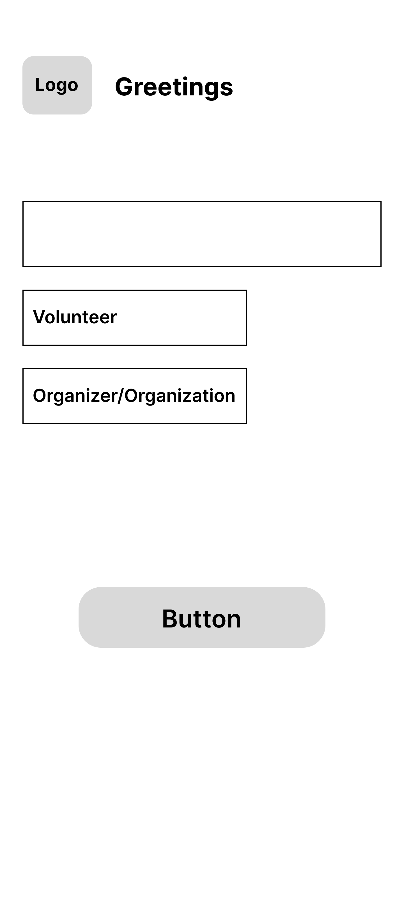
Shared onboarding wireframe for both user types
Volunteer Wireframes:
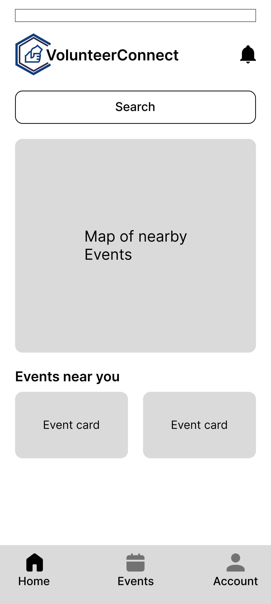
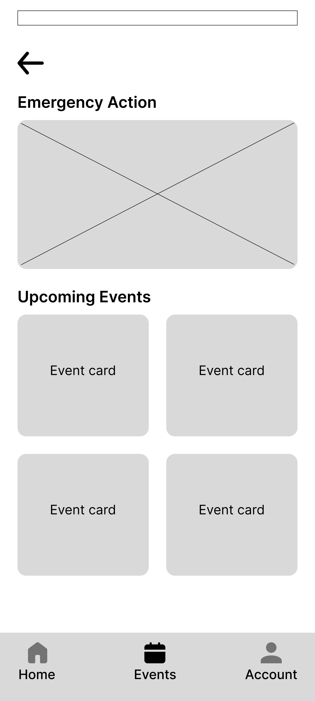
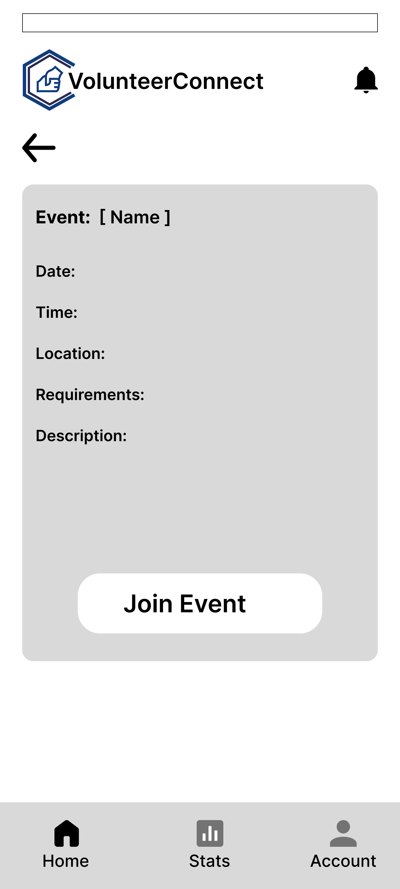
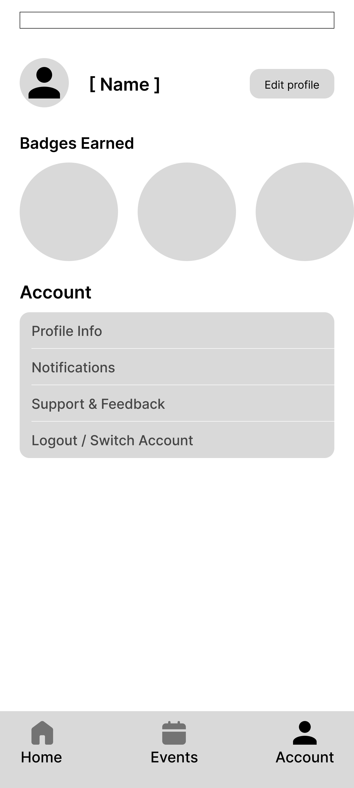
Organizer Wireframes:
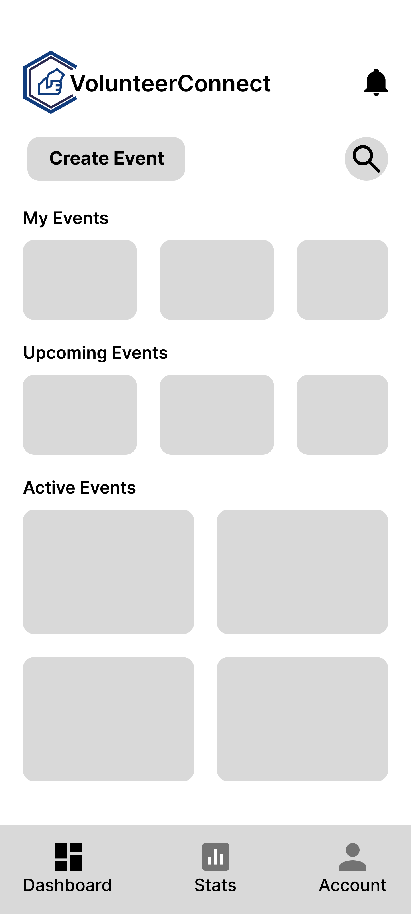
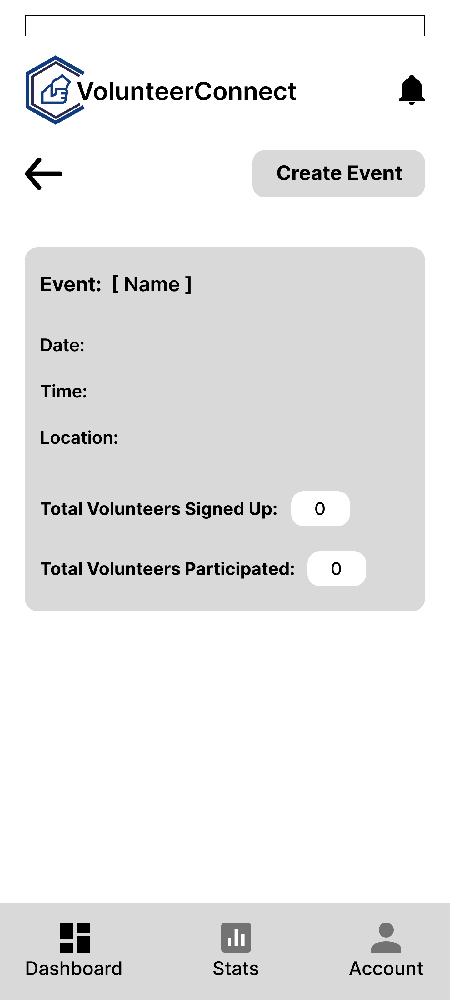
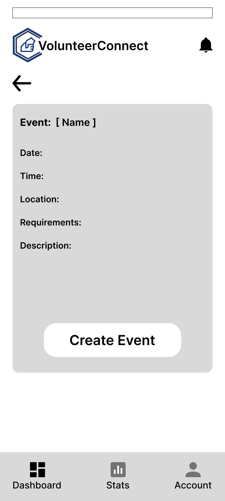
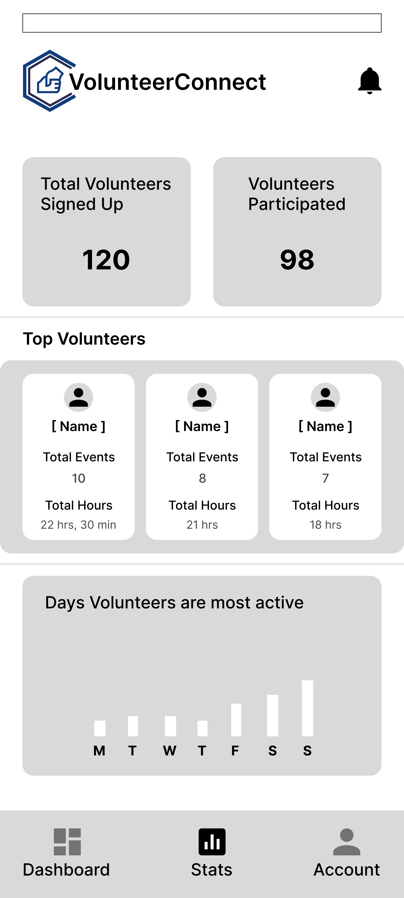
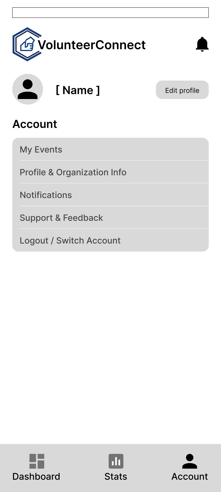
Design Decisions
Color Palette
The color scheme was strategically chosen to convey trust, community, and positive action:
Why Blue & Orange? Blue conveys trustworthiness and community spirit—essential for volunteer platforms. Orange represents action, warmth, and positive energy, motivating users to participate. The combination creates a professional yet approachable feel.
Typography & Visual Hierarchy
Clear, friendly typography ensures information is easily scannable. Event cards use visual hierarchy to highlight key information (date, location, requirements) at a glance, while badges use color and iconography for instant recognition.
Shared Experience
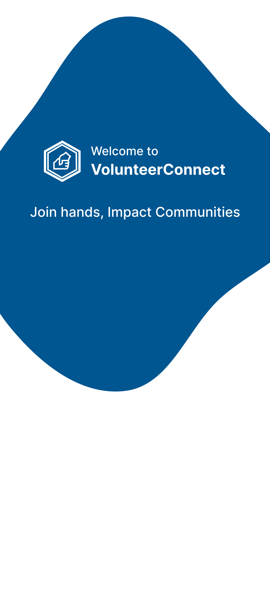
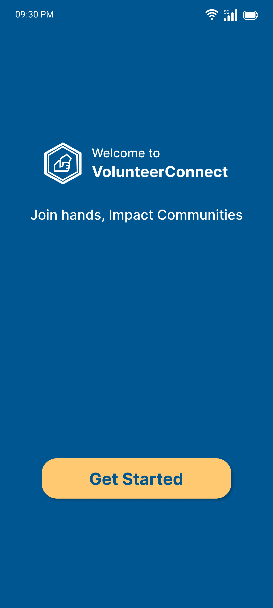
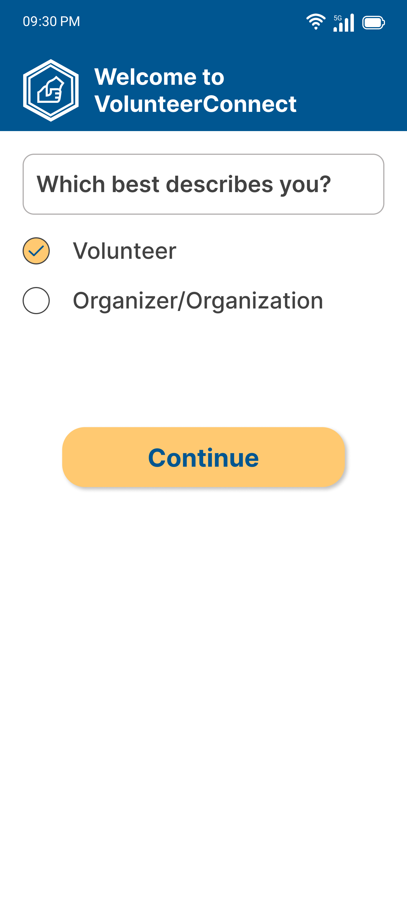
1. Unified Onboarding
The experience begins with a shared splash screen and onboarding that establishes the platform's purpose: "Join hands, Impact Communities." A crucial user selection screen asks "Which best describes you?" with options for Volunteer or Organizer/Organization, creating personalized paths from the start.
VolunteerVolunteer Experience
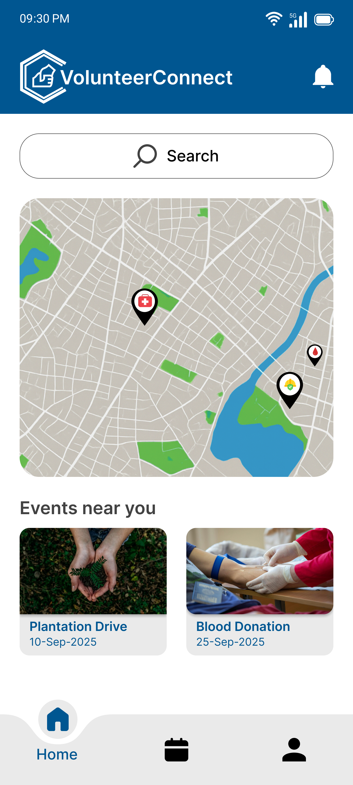
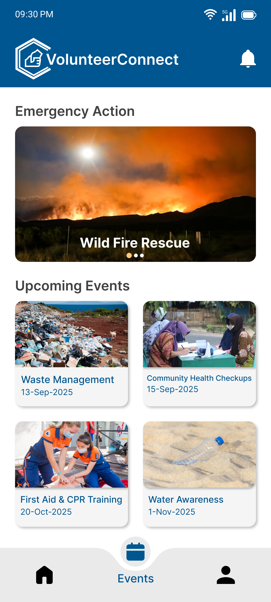
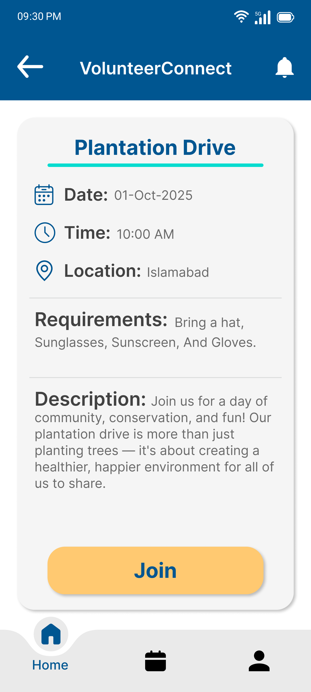
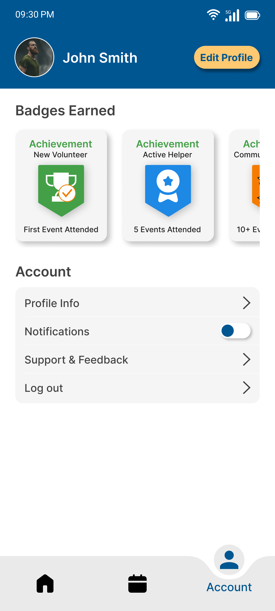
1. Discover Opportunities
The volunteer home screen provides multiple discovery paths including nearby events, emergency actions, upcoming events, and a map view for location-based browsing. This ensures volunteers can find opportunities that match their availability and proximity.
2. Event Details & Requirements
Event detail pages (like "Plantation Drive") display comprehensive information:
- Date & Time: 01-Oct-2025, 10:00 AM
- Location: Islamabad with visual location pin
- Requirements: Bring a hat, Sunglasses, Sunscreen, And Gloves
- Description: Full context about the event's purpose and impact
- Clear Join Button: Simple, prominent action to participate
3. Gamification & Recognition
The account screen showcases a badge system that motivates continued participation:
- Achievement Badges: "New Volunteer" (green), "Active Helper" (blue), "Community Champion" (orange)
- Milestones: First Event Attended, 5 Events Attended, 10+ Events
- Profile Management: Edit profile, notifications, support, log out
OrganizerOrganizer Experience
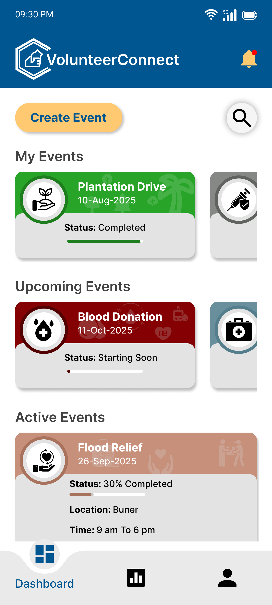
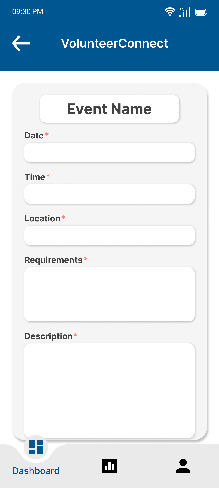
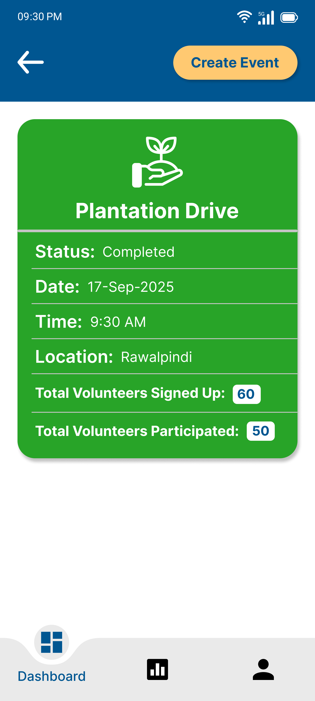
1. Comprehensive Dashboard
The organizer dashboard provides a complete overview of all events with clear categorization: Active Events, Upcoming Events, and Completed Events. Quick access to create new events ensures organizers can respond to community needs rapidly.
2. Streamlined Event Creation
The create event flow minimizes friction while capturing essential information. Organizers can quickly set up events with date, time, location, requirements, and descriptions—making it easy to mobilize volunteers for urgent needs.
3. Event Management & Details
Organizers see the same beautiful event detail view as volunteers, ensuring consistency, plus additional management controls for tracking signups and communicating with volunteers.
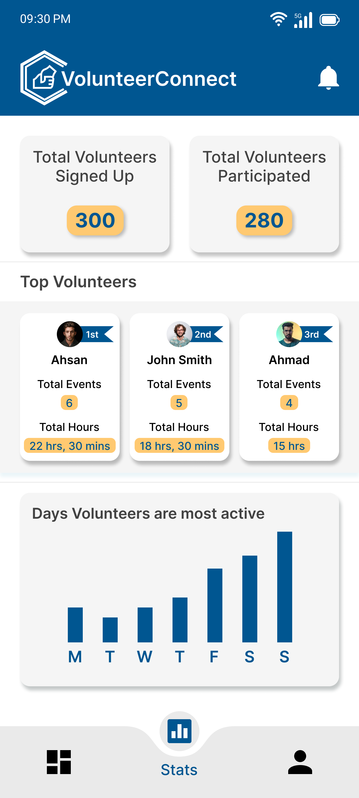
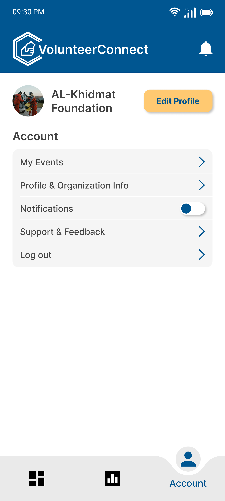
4. Impact Analytics
The stats screen provides crucial insights:
- Signup Metrics: How many volunteers registered for events
- Participation Rates: Actual attendance vs. registrations
- Top Volunteers: Recognition of the top 3 most active volunteers
- Event Performance: Data-driven insights for improving future events
Challenges & Solutions
Challenge 1
Problem: How to design one app that serves two completely different user types without confusion
Solution 1
Created a clear user selection during onboarding and designed distinct yet visually cohesive experiences for each user type
Challenge 2
Problem: Keeping volunteers motivated and engaged over time
Solution 2
Implemented a gamification system with achievement badges, milestones, and visual progress tracking
Challenge 3
Problem: Providing organizers with actionable data without overwhelming them
Solution 3
Designed a simple stats dashboard with key metrics (signups, participation, top volunteers) that tell a clear story
Design Principles
Two Sides, One Mission
Serve both volunteers and organizers while maintaining a unified brand experience
Instant Clarity
Event information must be scannable at a glance—time, location, requirements
Motivate Through Recognition
Badges and achievements create a sense of progress and community belonging
Data-Driven Impact
Give organizers the metrics they need to measure success and improve
Key Takeaways
- Dual-sided platforms need clear separation: User selection early in the flow prevents confusion and enables tailored experiences
- Gamification drives retention: Badges and achievement systems give volunteers tangible rewards for intangible contributions
- Impact needs measurement: Organizers can't improve what they can't measure—analytics are essential for community growth
- Emergency features save communities: Quick-response mechanisms help mobilize volunteers when it matters most
Impact & Results
VolunteerConnect demonstrates my ability to design complex, dual-sided platforms that serve distinct user needs. The design balances volunteer discovery and motivation with organizer management and analytics.
- Created separate yet cohesive experiences for two user types
- Designed a gamification system that motivates long-term volunteer engagement
- Built comprehensive analytics for organizers to measure impact
- Developed emergency response features for urgent community needs
- Established a scalable design system that supports both user flows
Next Steps
If this project were to move forward, I would:
- Add team features for volunteers to join events with friends
- Design skill-based matching to connect volunteers with opportunities matching their expertise
- Create messaging system for organizers to communicate with volunteers
- Implement push notifications for emergency events and reminders
- Add photo sharing so volunteers can document their impact
- Build calendar integration to sync events with personal schedules